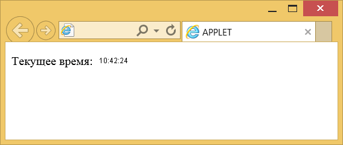

Элемент <applet>
| Internet Explorer | Chrome | Opera | Safari | Firefox |
| 3 | 1 | 1 |
| Android | Firefox Mobile | Opera Mobile | Safari Mobile |
Элемент <applet> предназначен для вставки на страницу апплетов — небольших программ, написанных на языке Java. Между открывающим и закрывающим тегом можно добавить текст, который будет отображаться в браузере, если он не поддерживает апплеты. В противном случае текст не выводится.
Этот элемент является устаревшим, взамен необходимо использовать <object>.
Синтаксис
<applet code="URL">Текст</applet>Закрывающий тег
Аттрибуты
- align
- Задаёт выравнивание апплета относительно близлежащих элементов и текста.
- alt
- Альтернативный текст.
- archive
- Указывает путь и имя файла с архивом.
- code
- Имя файла.
- codebase
- Путь к папке с апплетом, который задан атрибутом code.
- height
- Высота апплета.
- hspace
- Горизонтальный отступ от апплета до окружающего контента.
- vspace
- Вертикальный отступ от апплета до окружающего контента.
- width
- Ширина апплета.
Пример
<!DOCTYPE HTML PUBLIC "-//W3C//DTD HTML 4.01//EN"
"http://www.w3.org/TR/html4/strict.dtd">
<html>
<head>
<meta http-equiv="Content-Type" content="text/html; charset=utf-8">
<title>APPLET</title>
</head>
<body>
<p>Текущее время: <applet code="applet/Clock.class" width="60" height="10">
Ваш браузер не поддерживает Java-апплеты.
</applet></p>
</body>
</html>Результат данного примера показан ниже.

Рис. 1. Апплет для вывода текущего времени в окне браузера
Спецификация ?
| Спецификация | Статус |
|---|---|
| HTML 4.01 | Рекомендация |
Спецификация
Каждая спецификация проходит несколько стадий одобрения.
- Recommendation (Рекомендация) — спецификация одобрена W3C и рекомендована как стандарт.
- Candidate Recommendation (Возможная рекомендация) — группа, отвечающая за стандарт, удовлетворена, как он соответствует своим целям, но требуется помощь сообщества разработчиков по реализации стандарта.
- Proposed Recommendation (Предлагаемая рекомендация) — на этом этапе документ представлен на рассмотрение Консультативного совета W3C для окончательного утверждения.
- Working Draft (Рабочий проект) — более зрелая версия черновика после обсуждения и внесения поправок для рассмотрения сообществом.
- Editorʼs draft (Редакторский черновик) — черновая версия стандарта после внесения правок редакторами проекта.
- Draft (Черновик спецификации) — первая черновая версия стандарта.
Особняком стоит живой стандарт HTML (Living) — он не придерживается традиционной нумерации версий, поскольку находится в постоянной разработке и обновляется регулярно.